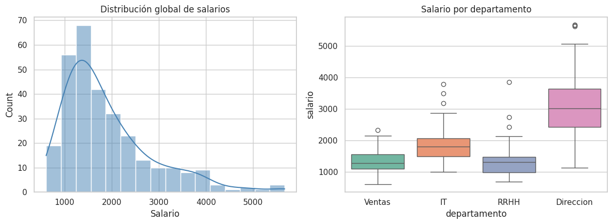

import syssys.path.append("../../src") # permite importar stats_toolkit desde notebooks/import numpy as npimport pandas as pdimport matplotlib.pyplot as pltimport seaborn as snsfrom scipy import statsfrom stats_toolkit import descriptive as descsns.set_theme(style="whitegrid")np.random.seed(42)
3.1 1. Generación del dataset simulado
Simulamos 300 empleados distribuidos en 4 departamentos. Los salarios siguen una distribución log-normal (común en datos salariales reales: asimétrica hacia la derecha, con pocos sueldos muy altos).
Observación: los tres métodos coinciden, como es de esperar. La ventaja de stats_toolkit es que centraliza la lógica y evita repetir código en cada notebook del curso.
3.4 4. Medidas de dispersión
Comparamos la dispersión salarial entre departamentos usando el coeficiente de variación, que nos permite comparar variabilidad relativa aunque los promedios sean distintos.
Un histograma y un boxplot revelan lo que los números por sí solos no siempre muestran: la forma de la distribución y la presencia de outliers.
Código
fig, axes = plt.subplots(1, 2, figsize=(12, 4.5))sns.histplot(df["salario"], kde=True, ax=axes[0], color="steelblue")axes[0].set_title("Distribución global de salarios")axes[0].set_xlabel("Salario")sns.boxplot(data=df, x="departamento", y="salario", ax=axes[1], palette="Set2")axes[1].set_title("Salario por departamento")plt.tight_layout()plt.show()
/tmp/ipykernel_140/495683293.py:7: FutureWarning:
Passing `palette` without assigning `hue` is deprecated and will be removed in v0.14.0. Assign the `x` variable to `hue` and set `legend=False` for the same effect.
sns.boxplot(data=df, x="departamento", y="salario", ax=axes[1], palette="Set2")

3.6 6. Asimetría, curtosis y detección de outliers
Código
forma = desc.shape(salarios)print(f"Asimetría (skewness): {forma['skewness']:.3f}")print(f"Curtosis de exceso: {forma['kurtosis_excess']:.3f}")outliers = desc.detect_outliers(salarios)print(f"\nNúmero de outliers detectados (regla 1.5*IQR): {len(outliers)}")print(f"Valores: {np.round(outliers, 2)}")
Asimetría (skewness): 1.442
Curtosis de exceso: 2.105
Número de outliers detectados (regla 1.5*IQR): 11
Valores: [4132.7 5671.35 5062.6 5634.41 4063.25 4359.33 4864.52 4593.43 4225.74
4797.28 5652.82]
Interpretación esperada: al provenir de una distribución log-normal, la asimetría debería ser positiva (cola derecha), consistente con lo discutido en la teoría sobre distribuciones salariales.
3.7 7. Resumen completo con stats_toolkit.summary_statistics
En lugar de llamar función por función, summary_statistics devuelve todo en un solo diccionario — útil para generar reportes automáticos.
Tu turno: usando stats_toolkit.descriptive, calcula el resumen estadístico completo solo para el departamento de Dirección y compáralo con el de Ventas. ¿Qué diferencias observas en el coeficiente de variación y en la asimetría? ¿Tiene sentido de negocio ese resultado?